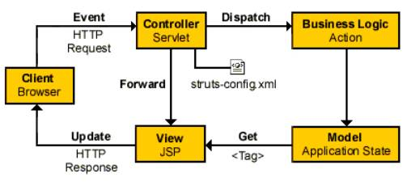

一个.jsp文件经过Struts配置文件路径的设置和action动作的简单的处理能够将用户提交的信息以form表单的形式转交给数据库层，并实现和另一个.jsp可以进行通信。
Struts体系结构和工作原理如下图：

Struts的体系结构包括模型（Model），视图（View）和控制器（Controller）三部分。
下面让我们从MVC角度来看看struts的工作原理：
1）模型（Mode1）
在Struts的体系结构中，模型分为两个部分：系统的内部状态和可以改变状态的操作（事务逻辑）。内部状态通常由一组Actinform Bean表示。根据设计或应用程序复杂度的不同，这些Bean可以是自包含的并具有持续的状态，或只在需要时才获得数据（从某个数据库）。大型应用程序通常在方法内部封装事务逻辑（操作），这些方法可以被拥有状态信息的bean调用。比如购物车bean，它拥有用户购买商品的信息，可能还有checkOut()方法用来检查用户的信用卡，并向仓库发定货信息。 小型程序中，操作可能会被内嵌在Action类，它是struts框架中控制器角色的一部分。当逻辑简单时这个方法很适合。 建议用户将事务逻辑（要做什么）与Action类所扮演的角色（决定做什么）分开。
2）视图（View）
视图主要由JSP建立，struts包含扩展自定义标签库（TagLib），可以简化创建完全国际化用户界面的过程。目前的标签库包括：Bean Tags、HTML tags、Logic Tags、Nested Tags 以及Template Tags等。
3）控制器（Controller）
在struts中，基本的控制器组件是ActionServlet类中的实例servelt，实际使用的servlet在配置文件中由一组映射（由ActionMapping类进行描述）进行定义。对于业务逻辑的操作则主要由Action、ActionMapping、ActionForward这几个组件协调完成的，其中Action扮演了真正的业务逻辑的实现者，ActionMapping与ActionForward则指定了不同业务逻辑或流程的运行方向。struts-config.xml 文件配置控制器。
笔者小结：
其实，Struts框架是一种思想，基于MVC思想而应用于JAVA Web开发的框架。关键是理解MVC的思想，具体Struts框架的实现，在下边会详细的说明。
本篇讲解了JSP、Servlet ,Struts的特点，Struts工作原理，以及其依据的模型MVC。
相信读者在阅读完成后，能够辨证的回答我们开头所提问的问题。